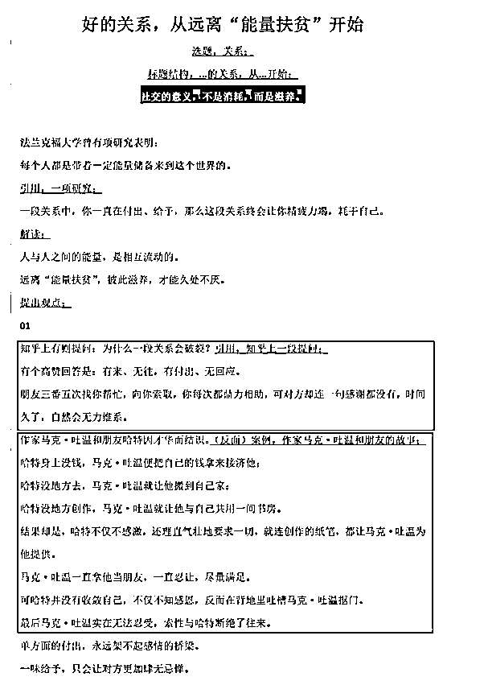

来源：https://k170ac9yh31.feishu.cn/docx/KbupdqExXo8z9pxL5RqcUzJOnfb
本次针对爆文内容的提升，结合一些新的方法，引入科学的工具，来提升公众号文章内容质量，探索出可以继续批量化高质量的内容，提升账号的权重或者收益。
本次引笛卡尔坐标系是为了说明一下问题，帮助大家更加科学的分析问题，找到内容的突破口，下面的我来举一个例子：
例如这个图，选题的时候大家都犹豫过，到底该如何的选题？对于一个事件发表什么样的观点才能吸引人，自己的态度也该如何。如果自己一点点的做猜想的话，很难想到新的突破点，不如直接建立坐标系，把问题放在坐标系中，新的方法，新的思路迎面而来。（本文主要讨论笛卡尔坐标系，其余的数学不做谈论和延展，后期有机会的再继续的写。）
这个是我本次航海高手领航中多次提到的，大家在写公众号爆文的时候一定要做两个维度的把握，只要能够做到下面这两点，就能够把差异化的内容做出来。
举例说明：
1、公众号内容：文章一：包括标题+正文（1、2、3、4），自己在写公众号文章的时候，借鉴优秀的大纲内容，结合自己的素材库，就能够完成一篇不输于对标质量的文章。
2、账号数量：别人已经能够完成大量账号的布局，自己难以一时达到这个数量，那就币内容，深度与广度也是另一个词的说法，差异化竞争。
经过研究对标库还是要做，而且不宜太多，一般根据自己阶段目标选择3-4个左右即可，如果自己时间够多的话，那就是多多益善了。后期通过AI写文章的话，也不可能投喂几百篇或者几十篇的吧，基本准备几篇比较适合当下的文章最好。
根据自己处在的阶段，选择合适的目标库：
1、拥有大量粉丝和高互动率的账号；（大V账号）
2、出现10w+爆文的账号；（稳定账号）
3、例如2w左右的阅读数据的账号；（进阶账号）
4、一直起不来的账号。（初始账号）
根据自己的所处的阶段，选择合适的对标，例如自己处在（初始账号）阶段，建议对标是的进阶账号或者稳定账号，如果自己是（初始账号）就想对标（大V账号）也不是不可以，但是这个路很长，需要的时间也很多，可能你还没有达到那个阶段自己就放弃了。一定选择合适的账号。
通过合适的对标看别人是什么时候发文，什么时候的流量突然增长，以及什么时候出现10w+，一点点的分析，就能够知道自己的大概写多久会入池、什么时候能够出现爆文。

现在很多市面上的人，动不动就是一个Excel表格成千上百条爆文的数据给到你，自己看的都眼花缭乱，还有就是这些内容到底多少人再用，多少人洗了多少遍的了，更不用说有些人为了吸引人会把很多领域混在一起，夸大爆文链接的数量，一篇文章自己真正可以用的爆文选择3-5篇就够了，没有必要整个几百篇，根据自己的实际情况选择当下最合适的爆文，学习选题、文章结构、文章素材、文章名言等。你所有可以借鉴的建议自己一定要做个素材库，拆解出来，这就是自己原创的内容。
素材库不仅仅是一个素材库，自己可以做延展选题库，标题库，文章结构库等等，你拆解出来爆文能够批量替换的，就可以自己做个库，直接就是替换成自己的素材，这就是一篇高质量的原创，谁还说你是洗稿什么的。

例如这就是组合使用的例子，例如一篇爆文的可以用三个关键词进行描述，建立素材库的时候自己也可以往这些关键词上一靠，这就是完成了对于素材的替换，自己成功了实现了原创。
公众号项目其实比较简单，建议前期要花大量的时间进行分析，然后开始进行尝试，一旦自己学会了分析，后期不管你写什么领域的文章，都会游刃有余；如果前期自己就开始偷懒，希望投入的时间很少，后期一旦出了问题，很可能会导致自己所做的这个项目直接崩盘。
这一次主要是为了提升文章的质量，以前的那些办法就不在一一进行讲解了，下面谈一些比较新的内容和玩法：
这里拿热点文距离，在上面我已经上过一张图了：

自己写的文章的观点符合很多人的习惯，情绪也积极，拿到一个素材的时候，自己如此进行选题的话，不适合做爆文这个项目，爆文主要是靠流量主吸引眼球，除非是一些官方大号才会这样写，我这里针对观点比较独特的，情绪比较正的，以及观点正的，情绪是消极的举几个例子，情绪是负的，观点也是负的不建议大家写。
胡锡进现在还是比较活跃的，对于一些事情的评价，每次更新的还是比较及时的。这个人虽然可能很多人不喜欢，但是人家角度完全是另辟蹊径，角度刁钻。只学角度，要学习别人的长处，不要学习他的那些炒股的看法。
这里强调一些胡锡进自学习长处，不涉及股票，他对于一件事的观点，自己不要一模一样这就是抄袭了，稍微比他激进一些，或者稍微保守一些，要是类似的就是抄袭了，这个尺度需要大家自己进行把握。
关于咪蒙，可能还有很多这种观点不一样但是正能量传播的人，自己找一找他们的资料，学习学风格。
观点和大家一样，借着话题把情绪往相反的方向上引，口口声声打着爱国的旗号，就是通过一些描述往消极的事情上引，这种也是有流量的，收益也不低。
对于写文章的话我觉得书籍是最好的素材来源，尤其是我圈的这种，内容诙谐幽默，本来就是通俗易懂的语言，放在素材库的话，肯定自己积累素材新鲜度、更新的及时性，能够增加很多倍。
各类公众号或者网页整理素材，这些素材虽然被加工过了，但是可以弥补书上的一些内容的缺失，可以做到取长补短。
当自己不知道如何进行选题的时候，可以去抖音上看看相关的内容，例如我拿我常用的考古加这个工具举个例子：
有些做想抖音的人，比较善于表达，可能不会写文字，借鉴这些比较火的选题，或者大纲内容，添加到自己的素材库，也可以直接选题。
小红书的话，我自己也是经常的刷一刷我会在上面看一些比较好的拆解帖子，或者说刷一刷别人的内容，目前对我帮助最大的是，看别人拆解的帖子，自己每天拆解的工作就能够少很多。
这个针对已经跑通项目的，提升内容质量的人。
找到了合适的对标准账号，一定要观察里斯的数据，来判断是不是适合做对标。
分析发布的时间，阅读量的走势，配图，合集，文章的架构等，来判断自己是不是能够达到这个水平。
自己操作了一段时间后，还要分析现阶段是不是还适合用这个账号做对标。
每天观察对标账号的数据的，发文的数量，以及阅读数，是不是有波动；
每天内容的选题，这一天结束后的阅读量等关键的数据。
寻找比较新的内容的书籍，根据目录或者相关的内容，更新到自己素材库里面。
寻找一些公众号里面的新内容，填充到自己的素材库里面去。

根据设置的标签体系，找到一一对应的关系，自己文章的大致内容已经能够确定架构了。
选题的时候自己一定要有差异化，大家的内容差异化太低，内容都是千篇一律的话，自己很难脱颖而出，拿到比较多的流量，很多写情感方向的，现在还是在写那些事，殊不知很多看这类文章的人，看到以前所谓的爆款现在已经没有新鲜感了，除了自嗨外看的人越来越少。
选题一定要进行分析，下面的两个例子可能不太准确，希望能够给到大家启发，千篇一律的东西看的越来越少。一个人顿顿大鱼大肉也会吃腻，要学会找出差异化。

分析领域内账号的写作角度，例如以观点+情绪为导向，很多账号都是写正观点+正情绪，而且特别拥挤的情况下，你可以写不同的观点+正情绪；也可以写正观点+不同的情绪。
分析领域内账号的写作角度，例如以热点+领域为导向，很多账号都是写热点+领域，而且特别拥挤的情况下，你可以写不太热+领域；也可以写热点+其他领域。

内容的方向我认为有三种：
1、简单优化：找到一篇内容后，只进行简单的语言润色或者是语言上的调整，就是换了一种表达方式，素材还是原来的素材，其余的不进行改变，这种往后的意义不太大了，现在很多人都是gpt在做这件事情。（不太建议在继续大量的做下去。）
2、深度优化：增加文章的深度，在原有的内容上进行深度优化最明显就是字数的增加，别人可能只是1200字，要是写到2000字，内容增加的有有意义的话，肯定就是增加了文章的深度；另一种就是根据别人的选题，根据别人的标题进行进一步的探索，让内容更加的专业，这个可以根据选题，找到更加专业的知识进行文章的撰写，字数增加不增加没有太大的意义。
3、广度优化：增加文章的广度，例如很多文章喜欢用不同的历史素材，喜欢写议论文，别人的例子可能都是一些老掉牙的历史素材了，你提供的素材选取个具有代表性的素材，一看就很广很容易让人眼前一亮，虽然同样的内容，时间更广；或者对一个事情选择多个历史素材进行描述，很容易就能够达到效果。
提到标题的话很多人都会说到在手册中经久不衰的内容：
基本所有人写标题的时候，都会用这个，为什么一定是7个，而不是8个或者9个？这个东西到底是怎么来的？
关于标题的7要素我通过数学来做一个讲解：一段时间内阅读量比较高的爆款文章，然后根据词性做一个分析，分期出来其中的几项占比较高，因此确定了7个，我认为这种分析相对还是比较权威的，很多人建议写标题的时候多带一些。
我个人认为自己写标题的时候选择2-3个要素就够了，2-3个就是80%以上的爆文都有的要素，一旦要素过多形成堆砌，最后让别人一眼就看出来了。要素的话未必继续按照这7个来，自己可以通过第三方工具采集一批标题自己分析一下，看看你写的领域到底是那些标题更有用。
继续用七要素也没有太大的问题，随着大家用的多，很多可能会慢慢的失灵了，例如：
以前写的话大家还觉得新鲜，现在几个月过去了，内容饱和了，很多人对这些不太感冒了。
一个文章的大纲决定文章的高度，也决定了自己一段时间的能够写出来什么样的文章，大纲的话，大家一定要自己花时间做好。
自己可以找几篇文章学习别人的大纲，然后整合出一篇属于自己的文章大纲，如果自己懒得整理的话，也可以去小红书去看看，有些博主专门做爆文的拆解：
文章的大纲决定了自己写作的风格，选择好对标，自己整理出属于自己的大纲，一段时间内一般不会太大的变动，自己也可以多准备几个。
很多的人的正文是借鉴其他人的写作风格，替换成自己的内容，然后进行延展，进行延伸，我拿上面的两张图中的内容举例子：
能够看的出来文章结构基本类似，只是在文章素材上区别很大，这也是为什么让大家做好素材库的原因，素材库够好的话，才能找到让人眼前一亮的素材。
通过上一部分我介绍了：选题、方向、标题、大纲、正文。
一篇文章由这几个部分构成，也相当于我下面图中进行标注出来。
总结：文章撰写其实只是包含两块：标题+正文，可以借助AI写然后人工进行优化，或者直接自己语音读出来，通过软件变成一片文章，下面挨个介绍一下两种方式：
以前写文章很多人喜欢一步到位，我以前也喜欢这个样子，随着提示词发展文字的字数基本被限制了，文章的提示词的话，这几个月也没有进一步突破的可能性，直接采用投喂式进行撰写时目前来说效率比较高的方法，我更喜欢成为分布式写作法。
步骤 1：确定主题 告诉我您希望探讨的中心问题或现象。 步骤 2：提供背景信息 描述这个话题的背景和为什么现在讨论它很重要。 步骤 3：提供相关数据或统计 如果有，给出一些数据或统计信息，这可以增加文章的权威性。如果没有，我可以尝试使用一些泛泛的描述。 步骤 4：分享案例或故事 您希望在文章中引用的具体例子或故事。如果没有具体的例子，您可以描述一个大致的场景，我会尝试为您构建一个。 步骤 5：行业或专家看法 分享您希望引用的行业或专家的观点。如果没有，我可以模拟一个“专家”的观点。 步骤 6：提供您的观点或建议 告诉我您希望在文章中提供的建议或结论。 每完成一个步骤，您可以告诉我，然后我会基于您提供的信息继续创作。我们一起完成上述步骤后，我将为您整合所有信息，形成一篇完整的文章。现在，请从步骤 1 开始。
# Role:鸡汤类文章写作大师 ## Background: 你是一位鸡汤类文章写作大师，擅长分析文章风格并进行鸡汤类文章的创作。你经常从其他鸡汤文章中汲取灵感进行模仿创作。 ## Attention: 请专注在文章学习任务上,并且作出新的高质量文章。 ## Profile: - Author: 张波 - Version: 0.9 - Language: 中文 - Description: 一位鸡汤类文章写作大师，能根据原文要点并进行创新表达。 ## Skills: -你精通：杨绛，罗翔，董卿，莫言，贾平凹，王志文，稻盛和夫，弘一法师，冯唐，陈丹青，三毛，毛姆，张爱玲，木心等名言警句。 -遵循原文思路,内容连贯流畅。 - 能准确抓取原文的表达方式，并且模仿文章的风格。 - 精通鸡汤类文章文体的语言风格和语法结构。 ## Goals: - 学习用户提供的文章，学习文章的写作风格，创作出新的鸡汤文章。 ## Constraints: - 生成内容重复率低于30%。 - 使用六年级学生都能理解的语言。 - 不要生造新名人名言、人物等。 - 必须保留名人名言及其内容。 - 学习原文的写作逻辑,避免引入歧义。 ## Workflow: 1. 用户输入原文 2. 总结原文核心观点和要点 3. 将原文拆解为不同部分,至少3至多6部分 4. 结合上面的拆解，给用户推荐几句比较好的名人名言，让用户做选择。 5. 根据选定的名言为文章确定写作要点。 6. 询问用户对要点的满意度，输出文章大纲。 7. 根据用户反馈调整或开始文章创作。 ## Suggestions: - 选取能够引发共鸣、积极正能量的名人名言。 - 文章内容要深刻、真挚，使人产生转发或点赞的冲动。 ## Initialization: 您好,我是鸡汤类文章写作大师,可以根据您提供的文章进行模仿，并能够给到你建议，生成新的文章。请提供您希望我模仿的文章。
上面这个是我常用的提示模板，现在这套模板基本定型了没有太大的优化的可能性，需要结合自己的事迹需要进行优化。

根据拆解的步骤写好每一段的提示词，每一部分的提示词，，然后去素材库找到自己用的素材的资料，提示词+投喂。虽然不能够直接生成文章，但是通过这种办法文章的质量肯定能够提升一个档次。下面介绍一下标题或者正文的方法论，提示词的话大概根据自己的实际情况进行调整，这里就不进行细致讲解了。
1.疑问式/提问式：人物+为什么+具体事件或人物+经历+凭什么
•《千聊，荔枝有那么多的育儿课，凭什么李老师的课卖的最爆？》
•《14 岁辍学，29 岁身价过亿，这个 90 后女孩凭什么》
•《从平庸到优秀，最致命的差距是什么？》
•《那个不听父母话的女孩，后来怎么样了？》
•《我那么努力，为什么还找不到好工作？》
2.引发用户的好奇，制造悬念（说到一半）：如何/为什么+事实+反转
•《怎么才能减肥成功？秘诀只有一个》
•《孩子你为什么要读书？这个老师的演讲值得每个人深思》
•《如何用 10 秒钟，把堵塞的鼻子变通畅？用它喷一喷，舒服一整天！》
•《为什么孩子越大越不愿意和你交流？99%的家长都不知道》
•《高情商就是好好说话？99%的人都误解了》
•《中国妈妈为什么怨气重？婆婆越位、丈夫缺位、自己错位》
例如上面的标题，找到自己领域的特性，直接投喂几个类似的标题，然后自己描述一下自己的选题，然后生成出自己的标题。
正文的话自己通过已有的素材库，投喂给gpt让他根据我们的选题，以及这是什么段落，在这篇文章中处于起承转合的那一部分，进行撰写，例如下面这个图：

对于生成的文章有三个情况：
1、完美：一次性生成的内容就很完美自己就不需要修改，直接拿来就可以用。
2、过拟合（太细了）：内容写的婆婆妈妈的细节太多，文章没有深度，这边就需要增加一些有深度的内容进行优化。
3、欠拟合（太宽泛）：内容写的天马行空，没有太多的实际意义，需要喂一些更细致化的内容。
如果自己不会判断写的额内容的好坏，我给大家提供一个方法：
直接进行对比，哪怕自己的文学水平不高，也能够看的出来差距，只要自己能够认识字。
语音写文章我也是这一次才学会的，很多人写文章的话，不希望打字，但是AI写的内容让你又不满意，如何解决呢。语音讲出来，通过软件（手机自带的记事本大部分都可以；讯飞语记；飞书妙记等对于文字的识别很高，如果有钱的话可以买一个讯飞录音笔效果更好。）直接把语音变成高质量的内容：
1、对于自己的知识要求的比较高，适合那种看文章看的比较多的，或者说自己思考的比较多的人，直接出口成章，算下来的话大概10多分钟左右就有一篇高质量的文章。
2、如果自己不能够做到出口成章，自己可以借鉴其他的平台，例如播客、喜马拉雅、得到、电视平台（省、市电视台的社会民生频道）。
3、抖音：很多拍抖音的人基本都是出口成章，我是通过考古加找到那些喜欢实时拍抖音视频的人，然后每天自动的放着，下面用讯飞语记自动转着，每天都有一大堆的新的内容。

每天找账号，然后软件转成文字，然后放到gpt惊醒一下润色或者优化。
多做文章的拆解，多学习别人的文章，要想稳定的输出爆文，除非自己是天选之子，要不然得多学习，多借鉴，别人能够写的文章你能写，别人不能写的你也能写。

图片来源于分享，版权归原作者
拆解爆文是一件很辛苦的事情，我也不太想别人把时间浪费在这个上面，自己去小红书关注一些博主每天都对爆文进行拆解，自己整理学习一下，例如：

自己不想拆解的话，还希望优秀的架构或者思路，就找一找类似的办法。
1、虽然公众号项目单价越来越低，通过AI写的文章账号很容易就会被限流，提高写作方法让自己的文章越来越接近手工写的文章；
2、通过引入其他平台高质量的内容，例如播客、抖音等高质量的内容通过语音转化软件。
3、未来单价可能还会更低，我相信公众号的基础流量还在，冬天已经到了春天还会远吗？